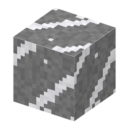

説明
①子ども 岩の割れ目を、白い石英がうめた脈。
②学生 石・深層岩の中（y−56〜96）にどこでもある。石のツルハシ以上で掘ると珪石、シルクタッチでブロック。
③大人 地下の熱い水（熱水）は岩から SiO2 を溶かしこみ、冷えたり圧力が下がったりすると割れ目に石英として沈める。地殻（地球の表面の岩）の約12%は石英で、長石の次に多い鉱物。石英脈には金がいっしょに入ることがある（金鉱脈）。
④ガチ 脈の中にすき間があると、石英は六角柱の透明な結晶＝水晶に育つ。山梨県の甲府では江戸時代から水晶が掘られ、水晶細工が地場産業になった。
作り方
（作り方のレシピは無い：拾う・掘る・ほかの方法）
使い道
（このアイテムを使うレシピは無い）